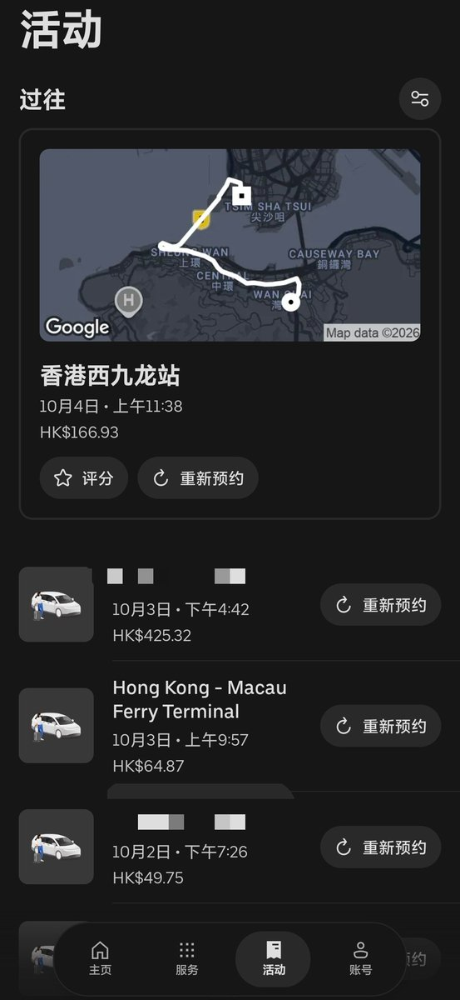

这次跟家里人5人出行港澳，打车用了Uber Taxi和澳门电召，分享下我遇到的问题
香港大部分出租都是4座，通过滴滴和高德叫到的车都是这种。少数有5座、6座车，而UberXL提供了6座反而更省心
澳门也可以用Uber不过我更习惯电召，最多可座5人，氹仔好叫但北边老城区不好叫，只好坐6块一口价的澳巴
因此最佳出行还是得控制在4人内，人少地铁公交、人多打车。上环坐船大概200每人。金巴（港珠澳大桥穿梭巴士）只要65每人小孩半价需要人工买票，算起来比船票还省钱省时，而且中间还是内地基站信号没开漫游也能上网
这次国庆给我的感觉就是，澳门比香港的人还密集。特别是大三巴那边澳巴都不停了，最后到关闸坐发财车到赌场门口再坐发财车到港珠澳大桥澳方口岸，澳门的车巨难打！如果要坐出租车，最好是绕一圈到关闸，再拦出租前往目的地
香港大部分出租都是4座，通过滴滴和高德叫到的车都是这种。少数有5座、6座车，而UberXL提供了6座反而更省心
澳门也可以用Uber不过我更习惯电召，最多可座5人，氹仔好叫但北边老城区不好叫，只好坐6块一口价的澳巴
因此最佳出行还是得控制在4人内，人少地铁公交、人多打车。上环坐船大概200每人。金巴（港珠澳大桥穿梭巴士）只要65每人小孩半价需要人工买票，算起来比船票还省钱省时，而且中间还是内地基站信号没开漫游也能上网
这次国庆给我的感觉就是，澳门比香港的人还密集。特别是大三巴那边澳巴都不停了，最后到关闸坐发财车到赌场门口再坐发财车到港珠澳大桥澳方口岸，澳门的车巨难打！如果要坐出租车，最好是绕一圈到关闸，再拦出租前往目的地
